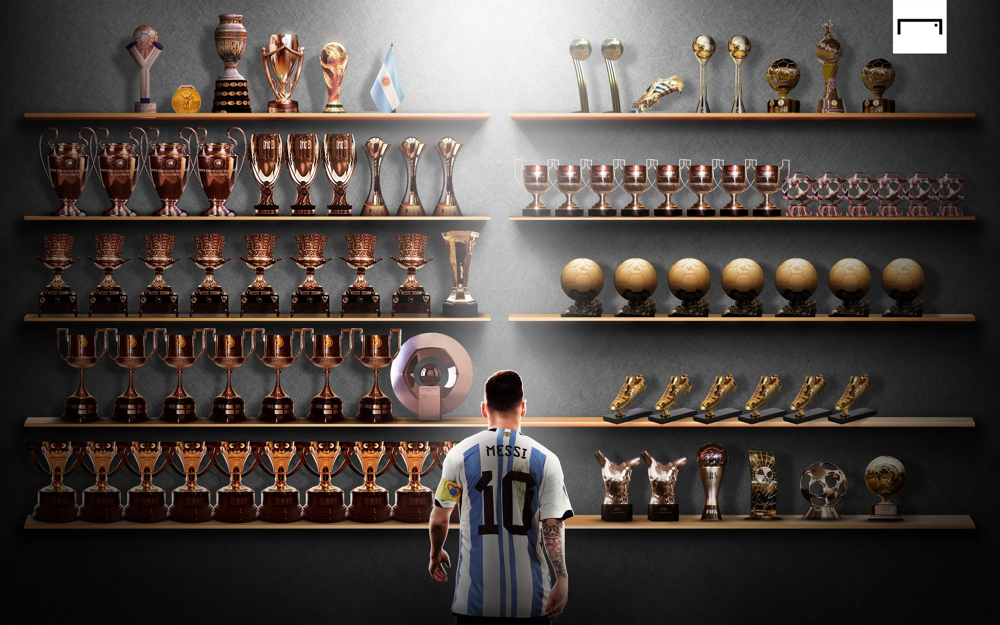

Lionel Andrés Messi
-Argentine Footballer

- 1987
Lionel Andrés Messi was born in Rosario, Santa Fe in Argentina on the 24th June, 1987. He is the third of four children of Jorge Messi, his father, who was a factory manager. Celia Cuccittini, Messi's mother, worked in a magnetic manufacturing workshop.
- 1992 - 1995
At the age of four, he joined a local club Grandoli, where he was coached by his father.
- 1995 - 2000
Messi joined the Rosario club (Newell's Old Boys) when he was six years old. During the six years he played for Newell's, he scored almost 500 goals as a member of "The Machine of '87", the near-unbeatable youth side named for the year of their birth, and regularly entertained crowds by performing ball tricks during half-time of the first team's home games.
- 2000 - 2003
As the Messi family had relatives in Catalonia, they sought to arrange a trial with Barcelona in September 2000. First team director Charly Rexach immediately wanted to sign him, but the board of directors hesitated; at the time it was highly unusual for European clubs to sign foreign players of such a young age. On 14 December, an ultimatum was issued for Barcelona to prove their commitment, and Rexach, with no other paper at hand, offered a contract on a paper napkin.
- 2004 - 2021
At the age of 16 years, four months, and 23 days old, Messi made his first-team debut as a 75th-minute substitute during a friendly against Porto on 16 November 2003. Under Frank Rijkaard, who promoted him to the first team, he made his league debut on 16 October 2004 against Espanyol, and scored his first senior goal on against Albacete, from an assist by Ronaldinho, becoming at that time the youngest-ever scorer for the club. At 17 years, three months, and 22 days old, he was at the time the youngest player to represent Barcelona in an official competition, and the club would win the league title during that 2004–05 season.
- 2023 - Present
Inter Miami CF announced the signing of Lionel Messi on a two-and-a-half-year contract on July 15, 2023. He debuted in a Leagues Cup match against Cruz Azul, scoring a free-kick in stoppage time. Messi scored nine goals in his first six games, leading the team to its first trophy by winning the Leagues Cup against Nashville SC. Despite his contributions, Miami finished 14th in the Eastern Conference and missed the playoffs. On October 30, 2023, Messi received his record-extending eighth Ballon d'Or and was named Time Athlete of the Year, the first footballer to achieve this honor. In the 2024 season, he set records for the most assists (five) and goal contributions (six) in a single MLS game during a 6–2 victory over the New York Red Bulls.
- 
-Lionel Messi's Trophy Cabinet
- 2021 - 2023
Lionel Messi joined Paris Saint-Germain (PSG) on August 10, 2021, signing a two-year deal with an option for a third year. He chose the number 30, the same he wore at Barcelona. Messi debuted against Reims, played his first Champions League match against Club Brugge, and scored his first goal for PSG against Manchester City. In 2021, he won his seventh Ballon d'Or after scoring 40 goals and leading Argentina to the Copa América. In the 2022–23 season, Messi won the Trophée des Champions and became the all-time highest goalscorer in European club football with 702 goals. He finished the season with 21 goals and 16 assists, helping PSG secure their 11th Ligue 1 title. After the season's end, PSG confirmed Messi's departure, marking his exit from the club.
Club Trophies
- Laliga10 titles
- Copa Del Ray7 titles
- Super Copa De Espana8 titles
- UEFA Champions League4 titles
- UEFA Super Cup3 titles
- FIFA Club World Cup3 titles
- Ligue 12 titles
- Trophée des Champions 1 title
- Leagues Cup1 title
International Trophies
- FIFA World Cup1 title
- Copa America2 title
- Olympic Gold Medal1 title
- FIFA U-20 World Cup1 title
- Finalissima1 title
Individual Trophies
- Ballon d'Or – 7 times
- FIFA World Player of the Year – 1 time
- The Best FIFA Men's Player – 2 times
- UEFA Men's Player of the Year Award – 3 times
- European Golden Shoe – 6 times
- La Liga Best Player – 6 times
- Pichichi Trophy (Top La Liga scorer) – 8 times
- Copa América Best Player – 2 times
- FIFA World Cup Golden Ball (Best player) – 2 times
- FIFA World Cup Silver Ball – 1 time
- Golden Foot Award – 1 time